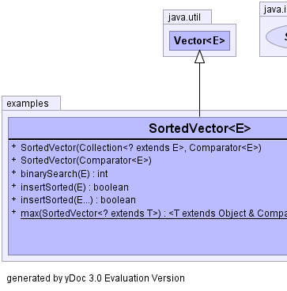
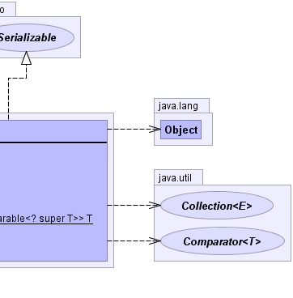

java.util.AbstractCollection<E>
java.util.AbstractList<E>
java.util.Vector<E>
examples.SortedVector<E>
java.util.AbstractCollection<E>
java.util.AbstractList<E>
java.util.Vector<E>
examples.SortedVector<E>
|
||||||||
| PREV CLASS NEXT CLASS | FRAMES NO FRAMES | |||||||
| SUMMARY: NESTED | FIELD | CONSTR | METHOD | DETAIL: FIELD | CONSTR | METHOD | |||||||
java.lang.Object
public class SortedVector<E>
yDoc example class representing a sorted container structure
using Vector as a base class.
(The source code contains only method stubs, i.e. no implementation.)
|  |  |
| Field Summary |
|---|
| Fields inherited from class java.util.Vector |
|---|
capacityIncrement, elementCount, elementData |
| Fields inherited from class java.util.AbstractList |
|---|
modCount |
| Constructor Summary | |
|---|---|
SortedVector(java.util.Collection<? extends E> collection,
java.util.Comparator<E> comparator)
Constructor Constructs a vector containing the elements of the specified collection. |
|
SortedVector(java.util.Comparator<E> comparator)
Constructor |
|
| Method Summary | ||
|---|---|---|
int |
binarySearch(E element)
Standard implementation of binary search algorithm. |
|
boolean |
insertSorted(E... elements)
Insert elements into the vector, sorted in ascending order according to the Comparator. |
|
boolean |
insertSorted(E element)
Insert an element into the vector, sorted in ascending order according to the Comparator. |
|
static
|
max(SortedVector<? extends T> data)
Returns the maximum element of the given sorted vector, according to the natural ordering of its elements. |
|
| Methods inherited from class java.util.Vector |
|---|
add, add, addAll, addAll, addElement, capacity, clear, clone, contains, containsAll, copyInto, elementAt, elements, ensureCapacity, equals, firstElement, get, hashCode, indexOf, indexOf, insertElementAt, isEmpty, lastElement, lastIndexOf, lastIndexOf, remove, remove, removeAll, removeAllElements, removeElement, removeElementAt, removeRange, retainAll, set, setElementAt, setSize, size, subList, toArray, toArray, toString, trimToSize |
| Methods inherited from class java.util.AbstractList |
|---|
iterator, listIterator, listIterator |
| Methods inherited from class java.lang.Object |
|---|
finalize, getClass, notify, notifyAll, wait, wait, wait |
| Methods inherited from interface java.util.List |
|---|
iterator, listIterator, listIterator |
| Constructor Detail |
|---|
public SortedVector(java.util.Comparator<E> comparator)
comparator - the Comparator to use with binary
search algorithm
public SortedVector(java.util.Collection<? extends E> collection,
java.util.Comparator<E> comparator)
collection - the Collection whose elements are to be
placed into this SortedVectorcomparator - the Comparator to use with binary
search algorithmO(n log n), where n
is this container's size (QuickSort complexity)| Method Detail |
|---|
public boolean insertSorted(E element)
element - the element to insert
O(log n), where n
is this container's size (BinarySearch complexity)public boolean insertSorted(E... elements)
elements - the elements to insert
O(log n), where n
is this container's size (BinarySearch complexity)public int binarySearch(E element)
element - the Object to look forO(log n), where n
is this container's sizepublic static <T extends java.lang.Object & java.lang.Comparable<? super T>> T max(SortedVector<? extends T> data)
Comparable interface. Furthermore, all elements
in the sorted vector must be mutually comparable (that is, e1.compareTo(e2)
must not throw a ClassCastException for any elements e1 and
e2 in the sorted vector).
data - the SortedVector whose maximum element is to be
determined
|
||||||||
| PREV CLASS NEXT CLASS | FRAMES NO FRAMES | |||||||
| SUMMARY: NESTED | FIELD | CONSTR | METHOD | DETAIL: FIELD | CONSTR | METHOD | |||||||